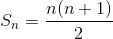
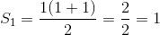
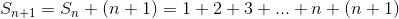
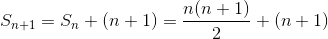
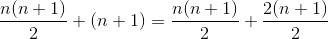
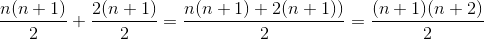

AXIOMAS
Los axiomas que definen a los numeros naturales son:
1- Hay un elemento especial 0 ∈ N.
2- Para todo n ∈ N existe un ́unico elemento n+ ∈ N llamado el sucesor de n.
3- Para todo n ∈ N, n+ ≠ 0.
4- Si n, m ∈ N y n+ = m+ entonces n = m.
5- Si S es un subconjunto de N tal que:
a- 0 ∈ S,
b- n+ ∈ S siempre que n ∈ S, entonces S = N.
(Jiménez L., Gordillo J., & Rubiano G., 2004).
El axioma numero 5 es coocido como Principio de Induccion Matematica (PIM)
¿Quién fue Peano?

Fue un matematico italiano nacido en 1858 en Spinetta, Italia, murió en 1932 en Turin, Italia. Se casó en 1887 pero no tuvo hijos. Estudió en la Universidad de Turin hasta 1880 y fue nombrado profesor en 1890, puesto que ocupó hasta su muerte. La axiomatización de los números naturales, trabajada en 1889 fue descirta en su insigne texto Arithmetice Principia Nova Methodo Exposita. (Antezana Iparraguirre, R., 2019).
Suma de n numeros
El PIM es usado para ciertas demostraciones en un conjunto de numeros naturales. Por ejemplo, la suma de n numeros naturales esta dada por Sn = 1+2+3+...+n
En este caso es usado para validar siguiente expresion:
| # | Pasos | Descripcion |
|---|---|---|
| 1 |  | Se supone que la suma de n numeros naturales esta dada por la expresión |
| 2 |  | Para n=1 la expresion se cumple |
| 3 |  | Se define S(n+1) como la S(n) + (n+1) |
| 4 |  | Por (1) y (3), la expresion para S(n+1) es igual a la suma de la expresion para S(n) más (n+1) |
| 5 |  | Se operan los sumando para ser expresados como fracciones |
| 6 |  | Se realiza la suma de los terminos y se factoriza el resultado |
Por lo tanto la expresion para S(n) se cumple para S(n+). Si se aplica la exprision con n=1 obtenemos su verificacion para n=2. Similarmente se verifica n=3, n=4, n= 5, etc. Así se deduce que la expresion se cumple para todo n ∈ N.